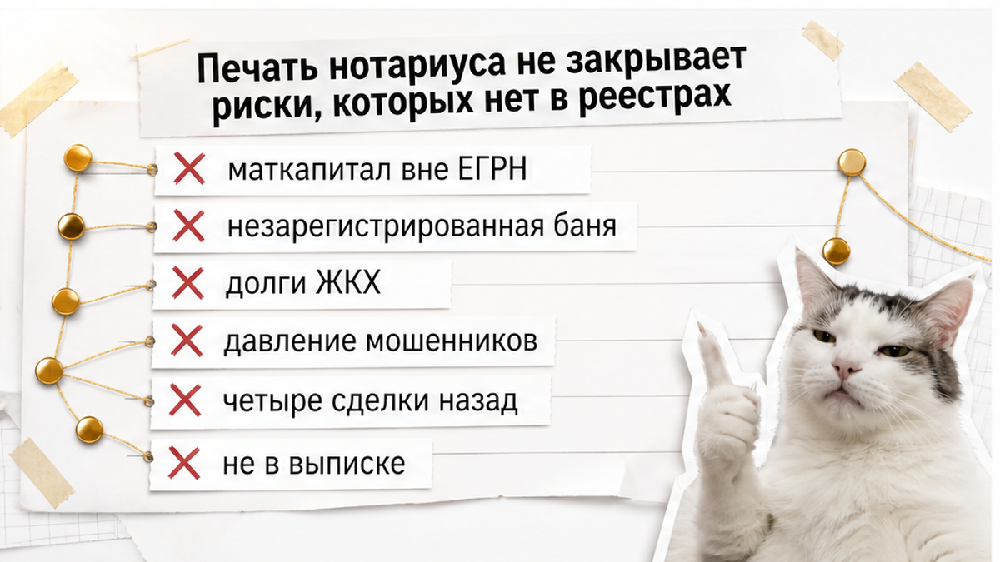
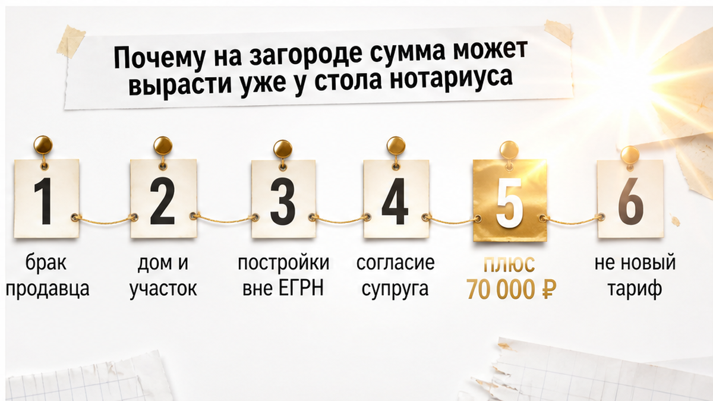
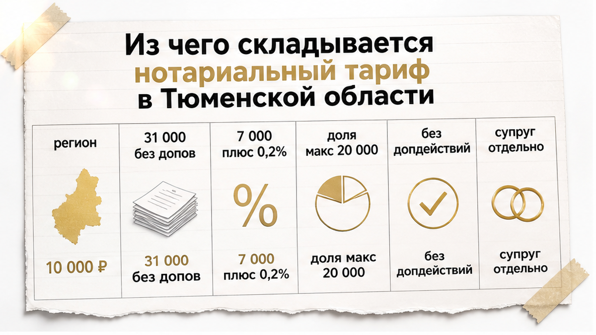
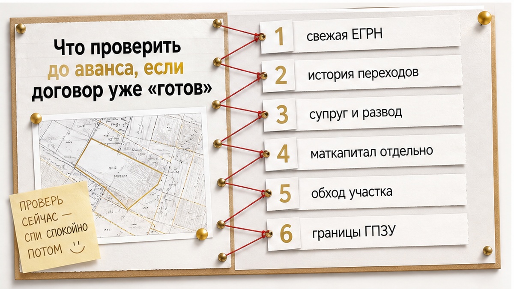

«Нотариус всё проверил, договор уже готов».
Так покупателю объяснили ситуацию перед сделкой с загородным объектом. Дом, земля, аккуратные документы, спокойный голос на другом конце телефона.
Кажется чисто.
А в день подписания к уже обсуждённой сумме добавилось около 70 000 ₽.
Не потому, что нотариальный тариф внезапно изменился. После нормальной раскладки выяснилось: нужны дополнительные документы по браку, отдельные действия по объектам и разбор построек на участке.
Это не универсальная цена нотариуса в Тюмени. Это сценарий, который возникает, когда фразу «всё проверено» принимают за полную юридическую проверку объекта.
Я веду сделки в Тюмени от звонка до регистрации. Расскажу, как это проверяют до аванса, а не у стола нотариуса.
Быстрый инсайт. Нотариус удостоверяет сделку, а не гарантирует объект. Региональный тариф Тюменской области за удостоверение договора недвижимости — 10 000 ₽, и это только часть суммы. Ориентир по объекту за 8 000 000 ₽ — примерно 31 000 ₽ без дополнительных действий. Согласие супруга, запросы, депозит нотариуса, подготовка проекта считаются отдельно. Незарегистрированная баня, старая история переходов права и материнский капитал вне ЕГРН в тариф не входят вообще. Правильный вопрос до аванса: «Что именно проверено и каким документом это подтверждается?»
При удостоверении договора нотариус проверяет законность самой сделки в пределах представленных документов и доступных реестров.
Это большая и нужная работа. Просто у неё есть границы.
Обычно в неё входят:
Дальше начинается то, о чём покупателю обычно не говорят.
Для нотариально удостоверенного договора законность сделки относится к зоне ответственности нотариуса. Росреестр не проводит такую же проверку повторно, как при обычном договоре.
Звучит успокаивающе. И действительно даёт покупателю больше, чем простая письменная форма.
Но это всё ещё не равно фразе «с объектом нет никаких рисков».
Нотариус удостоверяет конкретную сделку. Покупателю же нужно понять ещё и то, что происходит с самой квартирой, домом, участком и всей историей владения.
Вердикт секции: печать подтверждает процедуру, а не биографию объекта.

Есть риски, которые нельзя полностью увидеть по одной выписке ЕГРН.
Например:
Обычный человек видит: договор готов, нотариус назначен, значит сделка «под защитой».
Риэлтор спрашивает: а кто смотрел, откуда у продавца это право и что было с объектом четыре сделки назад?
Это не означает, что нотариус работает плохо. Просто удостоверение договора и юридическое сопровождение покупателя — разные задачи, и их не стоит складывать в одну строку бюджета.
«А нотариус же всё посмотрел?» — посмотрел то, что ему принесли.
Поэтому вопрос перед сделкой звучит не так: «Будет нотариус или нет?»
Правильнее спросить: «Какие риски уже проверены и каким документом каждый из них закрыт?»

У квартиры с одним взрослым собственником состав сделки обычно понятнее.
У загородного объекта часто одновременно продаются земля, дом и другие строения. У каждого элемента могут быть свои документы и свои вопросы.
Один адрес — несколько объектов права. Отсюда и растёт смета.
В сценарии с дополнительными 70 000 ₽ расклад выглядел примерно так.
«Но договор же подготовили заранее» — да. Текст договора.
Если договор подготовили заранее, это ещё не доказывает, что все эти вопросы были закрыты. Возможно, подготовлен только текст, а проверка истории, построек и семейных обстоятельств ещё не проводилась.
Именно поэтому дополнительные 70 000 ₽ в таком сценарии — это не «новый тариф нотариуса», а пакет возникших действий, документов и юридической работы.
Для сложного загородного объекта общая сумма может быть выше. Но считать 70 000 ₽ обязательной платой при любой покупке нельзя.
Вердикт секции: сумма выросла не у нотариуса, а там, где раньше не считали.

Единый нотариальный тариф складывается из двух частей: федерального тарифа и регионального тарифа нотариальной палаты.
Разложим по строкам.
| Что оплачивается | Ориентир |
|---|---|
| Региональный тариф Тюменской области за удостоверение договора недвижимости | 10 000 ₽ |
| Добровольная нотариальная форма, объект стоимостью от 1 до 10 млн ₽ | 7 000 ₽ + 0,2% от суммы свыше 1 млн ₽ |
| Обязательная нотариальная форма, например продажа доли | 0,5% суммы, но не более 20 000 ₽ |
При добровольном удостоверении договора недвижимости ориентиры без дополнительных действий выглядят так.
| Цена объекта | Ориентир федеральной и региональной частей |
|---|---|
| 5 000 000 ₽ | примерно 25 000 ₽ |
| 8 000 000 ₽ | примерно 31 000 ₽ |
| 12 000 000 ₽ | примерно 39 000 ₽ |
Ключевое слово — «без дополнительных действий».
В эти ориентиры не входят дополнительные нотариальные действия. Отдельно могут появиться согласие супруга, подготовка проекта, запросы, депозит нотариуса и другие услуги по объёму работы.
Юридическая экспертиза до сделки — проверка истории, построек, опеки и иных рисков — тоже не является федеральным нотариальным тарифом.
Это отдельная работа. Её нужно заранее включать в бюджет и договорённости, а не обнаруживать за час до подписания.
Финальную сумму лучше запросить у конкретного нотариуса до внесения аванса: с перечнем всех действий, документов и возможных дополнительных расходов.
Вердикт секции: тариф считается по объёму действий, а не по слову «нотариус».
Нотариальная форма обязательна не для каждой покупки недвижимости.
В обязательном порядке нотариус участвует, в частности, когда речь идёт о:
Если квартиру продаёт один совершеннолетний собственник и закон не требует нотариальной формы, стороны могут выбрать нотариуса добровольно.
Иногда это разумное решение. Особенно когда история объекта сложная, а сторон много.
Но добровольный нотариус не превращает сделку в комплексную проверку всех обстоятельств объекта.
Онлайн-оформление с биометрией и усиленной квалифицированной электронной подписью также не отменяет обязательный нотариус там, где он предусмотрен законом.
Вердикт секции: форму сделки выбирают, а объём проверки всё равно придётся закрывать отдельно.

До аванса нужно не просто увидеть проект договора.
Нужно понять, на каких документах он основан и какие вопросы остаются без ответа.
Полезный вопрос продавцу, агенту и нотариусу можно сформулировать прямо.
«Что именно проверено, каким документом это подтверждается и что будет, если обнаружится незарегистрированная постройка или потребуется согласие супруга?»
Обычный человек стесняется задавать такие вопросы. Риэлтор задаёт их до денег, а не после.
Если на них отвечают только словами «нотариус всё посмотрел», аванс лучше не торопиться вносить.
Есть ещё одна важная граница.
Нотариальная форма не является абсолютной защитой от мошенничества и психологического давления.
В анализе ЦДЭ ИЭП были рассмотрены 298 судебных дел 2023–2026 годов о недействительности договоров под влиянием телефонных мошенников. Нотариальными были 48 сделок. Иски отклонили только в 19 случаях — примерно в 40% этого узкого массива.
Это не статистика всех нотариальных сделок в России и не доказательство, что нотариус бесполезен.
Она показывает другое: печать подтверждает определённый объём законности и процедуры, но не отменяет проверку обстоятельств продавца, истории объекта и реального поведения участников.
Для покупателя безопасная схема выглядит не как «нотариус вместо проверки», а как несколько слоёв:
Ни один слой не заменяет остальные.
Это особенно важно при покупке дома или участка в Тюмени, где один «объект» часто состоит из земли, дома и нескольких построек.
Вердикт секции: нотариус закрывает сделку, но не закрывает вашу проверку.
Не всегда. Обязательная форма нужна, в частности, при продаже доли в праве, дарении недвижимости между гражданами, сделке с несовершеннолетним или при участии органов опеки, договоре ренты с недвижимостью и в отдельных случаях ипотечной сделки. Если квартиру продаёт один совершеннолетний собственник и закон нотариальной формы не требует, стороны решают сами.
Единый тариф складывается из федеральной и региональной частей. Региональный тариф Тюменской области за удостоверение договора недвижимости — 10 000 ₽. При добровольной форме для объекта от 1 до 10 млн ₽ федеральная часть считается как 7 000 ₽ + 0,2% от суммы свыше 1 млн ₽. Ориентиры без дополнительных действий: около 25 000 ₽ при цене 5 000 000 ₽, около 31 000 ₽ при 8 000 000 ₽ и около 39 000 ₽ при 12 000 000 ₽.
Нет. Для нотариально удостоверенного договора законность сделки относится к зоне ответственности нотариуса, и Росреестр не проводит такую же проверку повторно, как при обычном договоре.
Не по документам. Постройки, которых нет в ЕГРН, остаются для покупателя незарегистрированными объектами. Их выявляют осмотром объекта и кадастровой проверкой, а не удостоверением договора.
Нет. Онлайн-оформление с биометрией и усиленной квалифицированной электронной подписью не отменяет обязательный нотариус там, где он предусмотрен законом.
В описанном сценарии это был не новый тариф, а пакет возникших действий: документы по браку, отдельные действия по объектам и разбор построек на участке. Для сложного загородного объекта сумма может быть и выше, но обязательной платой при любой покупке эти 70 000 ₽ не являются.
Если вы покупаете квартиру, дом или участок и хотите до аванса разложить проверку и расходы по пунктам, напишите в Telegram, в MAX по номеру +7 922 001 65 05 или позвоните — разберём сделку до денег.
Материал проверен: Святослав Шакин, личный риэлтор в Тюмени. Материал — ориентир для покупателя, не индивидуальная юридическая консультация.